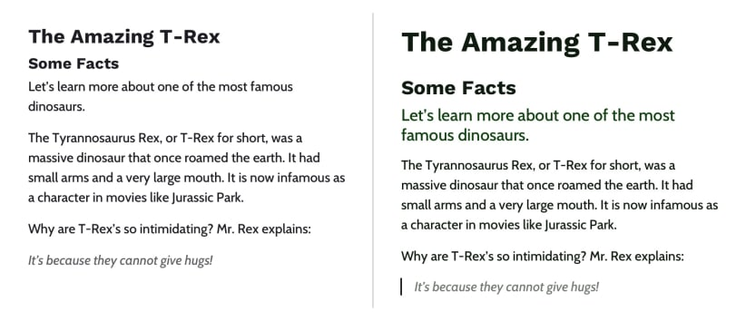

Back in the day, it wasn't uncommon to see things like this:
<li>Some text here.
<li>Some new text here.
<li>You get the idea.
Notice how the wrapping UL/OL tag was omitted. Additionally, many
chose to leave off the closing LI tags as well. By today's
standards, this is simply bad practice and should be 100% avoided.
Always, always close your tags. Otherwise, you'll encounter
validation and glitch issues at every turn.
Artículo 2: Never use inline styles
When you're hard at work on your markup, sometimes it can be
tempting to take the easy route and sneak in a bit of styling.
<p style="color: red;">I'm going to make this text red so that it really stands out and makes people take notice! </p>
Sure -- it looks harmless enough. However, this points to an error
in your coding practices.
Bloque CSS
Artículo 1: Hierarchy provides a clear visual order to content
Hierarchy is something you really only notice when it’s not there.
In typography, hierarchy refers to the visual difference between
various pieces of text. It’s the distinction between headings,
paragraphs, links, and other text styles.
This distinction is made by choosing different fonts, colors, size,
capitalization, and other properties for each type of text content.
Good hierarchy makes complex information easier to digest and guides
users through your content.

Left: Poor hierarchy. There’s not much differentiation in the size
or color of the text to help users digest the content. Right: Better
hierarchy that uses more variety in font size, color, and spacing to
help users quickly navigate the content.
Artículo 2: Choosing fonts
With typography, we need to make sure it is as easy to read as
possible. The greatest overall factor in readability is the font you
choose—which is a huge topic. There are many factors that determine
how "readable" a font is. Some fonts are made specifically to be
used as headings or short lines of text; these are called "display"
fonts, and they often have more personality than fonts designed to
be used for text. Unique flourishes and quirks make display fonts
harder to read at small sizes and when part of a large paragraph. As
a rule of thumb, use a more straightforward font for text and only
use display fonts for headings.
If you’re in a pinch and need a readable font, try Google Fonts. Add
a paragraph of text to the preview field and size it roughly how it
will display on your website. You can then narrow down your results
to serif or sans-serif and scan the list of fonts for one that is
easy to read. Roboto, Noto Sans, Merriweather, and PT Serif are all
very readable options.
Text shadow
Este código define dos sombras (text shadow) para elementos p. El
número de sombras puede ampliarse según se desee; no olvides poner
siempre una coma para separar las cifras.
Los dos primeros elementos determinan la posición de la sombra
(primero la coordenada para X y luego para Y). La tercera cifra
define el tamaño. Por último se especifica el color de la sombra,
ya sea por indicación RGBA (300, 180, 100, 1) como en la primera
línea, o por indicación absoluta como en la segunda línea (red).
Una vez aplicado el anterior comando CSS, el texto se verá de la
siguiente forma: